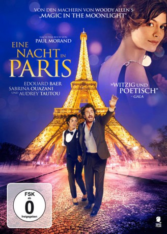
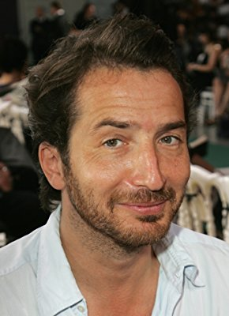

#7753 Eine Nacht in Paris
Alternativ: Open at Night (Englischer Titel)
 
 IMDB-Wertung: 5.6 / 10
IMDB-Wertung: 5.6 / 10  Metascore: 0
Metascore: 0 
Das Theater von Luigi (Edouard Baer) steht vor dem Bankrott und ihm bleibt nur eine einzige Nacht, um das nötige Geld aufzutreiben. Der exzentrische Regisseur des nächsten Stücks ist ihm dabei keine Hilfe. Schließlich möchte er einen echten Affen auf der Bühne haben und außerdem ist es schwer, die Theatertruppe zur Premiere zu bewegen, wenn niemand bezahlt wird. Die Situation scheint ausweglos zu sein und deswegen ist Luigi auf die Hilfe seiner rechten Hand Nawel (Audrey Tautou) und die der überkorrekten Praktikantin Faeza (Sabrina Ouazani) angewiesen. Und natürlich findet man nicht die Lösung des Problems, wenn man grübelnd an Ort und Stelle verbleibt – stattdessen entbrennt eine aberwitzige Tour durchs nächtliche Paris, bei dem kein Stein auf dem anderen bleibt. Einen Affen finden? Das ist schon bald das geringste Problem…
Jahr: 2016
Dauer: 96 Minuten
FSK: 0
Land: Frankreich Studio: Sunfilm EntertainmentTonspuren:
Untertitel: Deutsch,
Auflösung: 1080p (1920x1040) Größe: 3358 MB
Genre: Drama, Komödie
Regisseur: Edouard Baer
Drehbuch: Edouard Baer
Soundtrack:
Darsteller:
-  Edouard Baer als Louis Steiner, dit Luigi
 Sabrina Ouazani als Faeza Tayeb
Sabrina Ouazani als Faeza Tayeb Audrey Tautou als Nawel
Audrey Tautou als Nawel Grégory Gadebois als Marcel
Grégory Gadebois als Marcel- Yoshi Oida als Atsuhiko Dazai
 Michel Galabru als Michel Galabru
Michel Galabru als Michel Galabru Michel Fau als Directeur bar branché
Michel Fau als Directeur bar branché- Sylvia Homawoo als Cousine Marcel
- Tiby als Lisette, la guenon
- Pascal Bianco-Levrin de Bouzid als Man in the street (uncredited)
- Christophe Meynet als Chris
- Jean-Michel Lahmi als Théo Sarapos
- Patrick Boshart als Monsieur Pat
- Marie-Ange Casta als Clara
- Alka Balbir als Karine
- Lionel Abelanski als Lolo
- Atmen Kelif als Kamel
- Christine Murillo als Ingrid Pelissier
- Kaori Ito als Assistante Dazai
- Adriana Pegueroles als Taxi Tina
- Alfredo Arias als Le dîneur chez Ingrid
- Booder als Le vendeur de roses
- Guilaine Londez als Gardienne zoo du Jardin des Plantes
- Francis Van Litsenborgh als Gardien zoo du Jardin des Plantes
- Louis-Marie Audubert als Gardien zoo du Jardin des Plantes
- Lisa Diaz als Baby-sitter Faeza 1
- Naomi Diaz als Baby-sitter Faeza 2
- Gilles-Vincent Kapps als Le banquier
- Emmanuelle Lepoutre als Monique
- Olivier Macarez als Roger, le mari de Nawel
- Elsa Roger-Lacan als Chloé, la fille de Luigi
- Jennifer Gold als La fille aînée de Luigi
- Nadir Louatib als Jeune Montreuil
- Marcelin M'Baya als Jeune Montreuil
- Flora Djien als La standardiste
- Michèle Hery als Mireille, la costumière
- Alexia Giordano als La secrétaire
- Emmanuel de Chauvigny als Le décorateur
- Partha Majumder als Comptable
- Rosemine Borget als Gardienne de square loge
- Christophe Mendras als Administrateur théâtre
- Manon Barthélémy als Ouvreuse théâtre
- Jean-Philippe Heurteaut als Technicien théâtre
- Dominique Goffaux als Technicien théâtre
- Laurie Beurier als Technicienne théâtre
- Anna Bouguereau als
- Nader Boussandel als Assistant tournage
- Alice Dufour als Danseuse tournage
- Alain Weill als Barman Closerie
- Patrice Genestier als Barman La Liberté
Datei: X:\2016(N-Z)\Nacht in Paris, Eine (2016, FSK0, 1920x1040).mkv seit 15.12.2017
Festplatte: HD 2016(A-Z)
 Es gibt insgesamt 182 Filme in der Gruppe '2016(N-Z)'
Es gibt insgesamt 182 Filme in der Gruppe '2016(N-Z)'